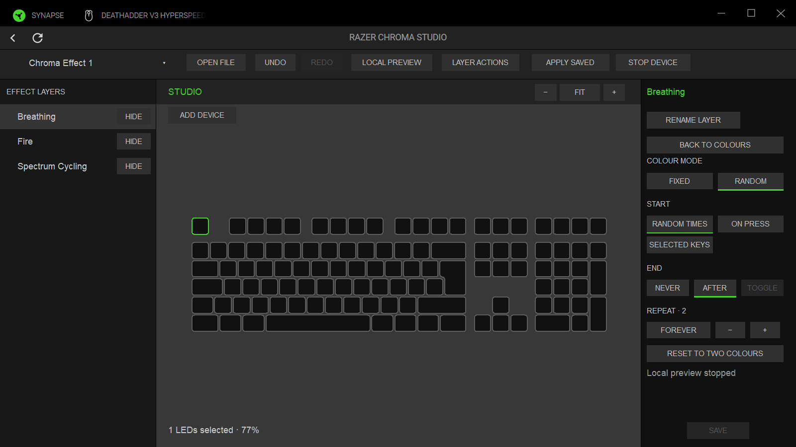
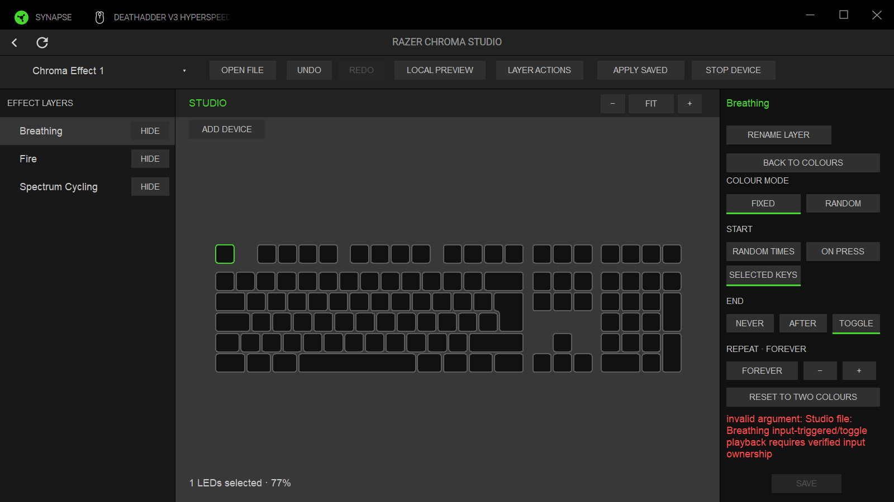
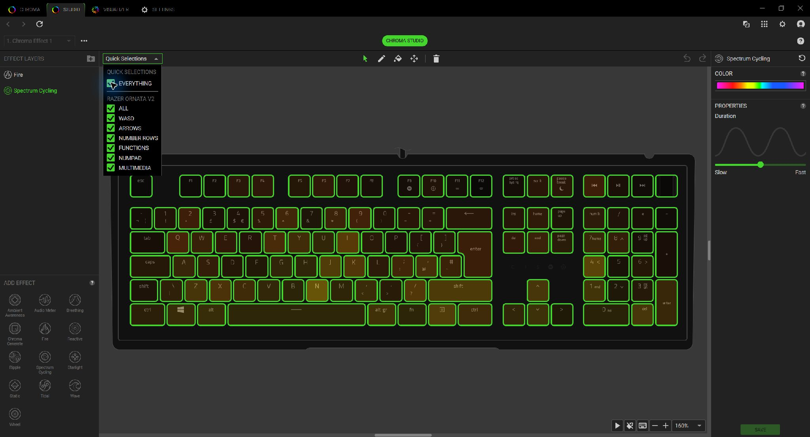

The two native images capture the owned test window through Windows PrintWindow, with simulated devices and an isolated profile store. These accompany code assertions for save, repeat count, reset, undo/redo, read-only refusal and zero device requests.


This inventory capture shows Spectrum Cycling, not Breathing. It establishes the Studio shell and property styling only. No matching stock Breathing playback screenshot was available in the retained inventory. The current native page uses buttons and a separate property page; stock uses dropdowns and a numeric stepper. Shell geometry, chassis/key legends and controls visibly differ. Pixel parity is open.
